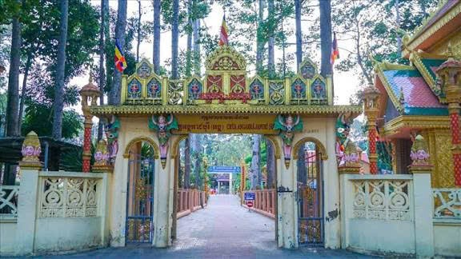
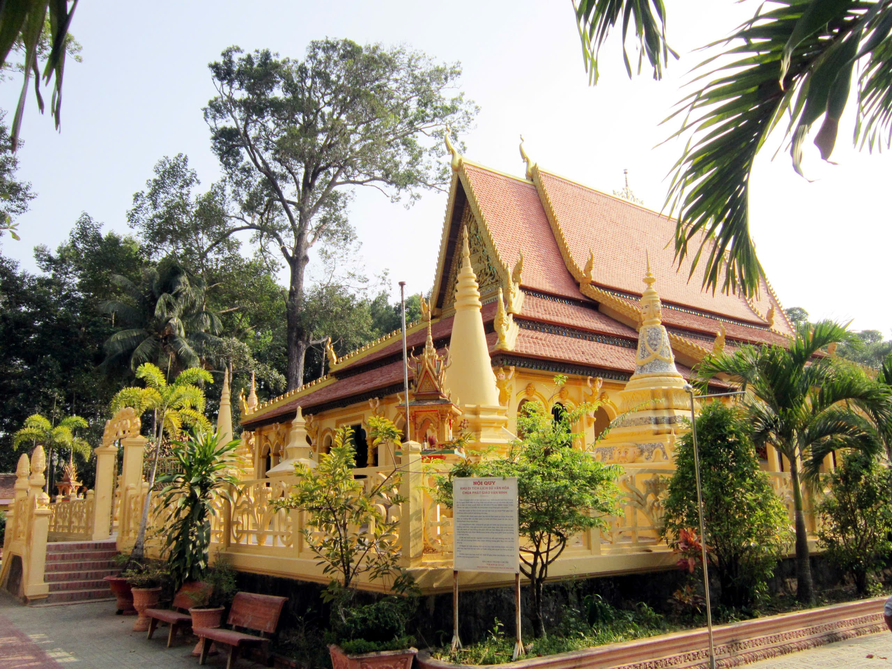
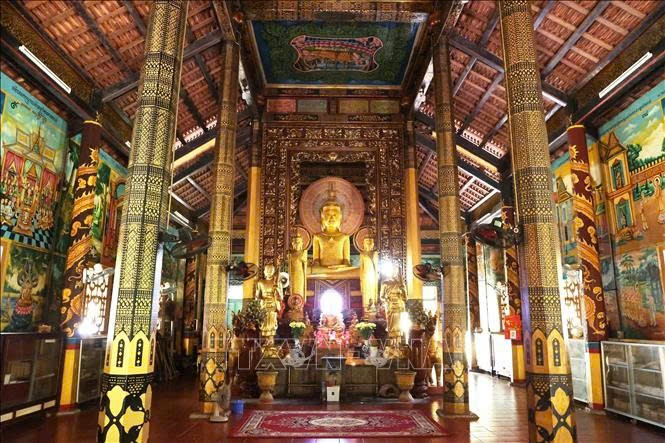

Ngôi chùa Khmer cổ nhất Trà Vinh với kiến trúc Angkor đặc trưng.
Chùa Âng là ngôi chùa Khmer cổ nhất tại tỉnh Trà Vinh, nằm trong quần thể danh thắng Ao Bà Om. Chùa nổi bật với mái cong cao vút, hoa văn chạm khắc tinh xảo và không gian rợp bóng cây cổ thụ, mang đậm dấu ấn kiến trúc Angkor của văn hóa Khmer.
Chùa được xây dựng từ thế kỷ X và trải qua nhiều lần trùng tu nhưng vẫn giữ được dáng vẻ cổ kính. Đây là trung tâm sinh hoạt tín ngưỡng, giáo dục đạo đức và văn hóa truyền thống của cộng đồng Khmer Nam Bộ.


